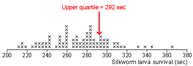
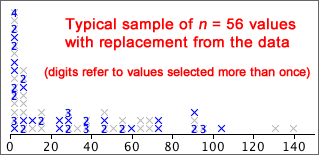
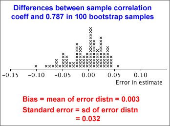

If you don't want to print now,
Standard errors and CIs from formulae
If a formula can be found for the standard error of an estimator, an approximate 95% confidence interval can be found from
estimate - 2 s.e. to estimate + 2 s.e.
For some estimators, there is no formula for the standard error, so a different approach is needed.
Rainfall example
Understanding of the distribution of rainfall lets farmers make better choices about the crops that are grown and when they are planted, especially in areas prone to drought. A useful summary is the upper quartile of the rainfall distribution in a month — the rainfall that is exceeded in only 1 out of 4 years.
The diagram below shows October rainfall in Samaru, Nigeria for the 56 years between 1928 and 1983.
Assuming that there is no climate change, the sample upper quartile is our best point estimate of the upper quartile for the underlying population distribution, but there is no convenient formulae for its standard error.
Standard error of a proportion
If statistical theory does not provide the error distribution for the estimator of interest, a simulation can often be used to find properties of the error distribution numerically.
This methodology is illustrated with a simulation to find the standard error of a sample proportion. Since we already have a formula,
standard error = 
a simulation is unnecessary, but it allows us to simply illustrate the method.
Example
A sample of n = 36 values are selected from a population with probability π of success, so the number of successes will have a binomial distribution,
X ~ binomial (n = 36, π)
If we knew the value of π, we could take repeated samples from this binomial distribution, find the estimation error, (p - π) for each sample, and build up the error distribution.
If x = 17 successes are observed, our best estimate of π is p = 17/36 = 0.472, so we could perform this simulation using p instead of π.

This simulation of 100 samples provides approximations to the bias (-0.004) and standard error (0.080) for this type of estimator. These are fairly close to the values from the formulae,
bias = 0
standard error =  = 0.0832
= 0.0832
In practice, the formula would be used for the standard error of a proportion, but we can use simulations for other examples where a formula does not exist.
Normal distribution parameters
The mean, µ, of normal populations is usually of most interest, but we may also want to estimate:
The corresponding sample statistics provide point estimates of these parameters, but formulae for standard errors may be difficult to find.
Simulation
If the values of µ and σ were known, we could perform a simulation with repeated samples to find the error distribution for the type of estimate that we were using. The standard deviation of the error distribution gives the standard error of the estimate.
In practice, µ and σ are unknown, but we can perform a similar simulation, replacing them with the sample mean and standard deviation.
Example
We want to how long one in four silkworm larvae will survive a certain dose of poison — i.e the upper quartile of the distribution of survival times. The diagram below shows the survival times of a sample of 80 larvae and the point estimate of the upper quartile.

The survival times have a fairly symmetric distribution and the diagram below shows a normal distribution whose mean and standard deviation are the same as those of our actual data.

This approximate normal distribution has upper quartile 293.3, so we can perform a simulation with samples of n = 80 values from this distribution and find how far the sample upper quartiles are from this theoretical value — the error distribution.
From the 70-95-100 rule-of-thumb, the error has approximately 95% chance of being within 2 s.e. of zero and will be almost certainly within 3 s.e. of zero. This means that our point estimate of the upper quartile (292 secs) is likely to be less than 9 sec from the underlying population parameter and will be almost certain to be less than 13.5 sec from it.
Bootstrap simulation
The simulations can be based on random samples from any approximation to the population distribution. If a normal approximation does not seem reasonable, the actual data can be used as an approximate 'population' and random samples selected with replacement from it. Such samples are called bootstrap samples.
A simulation with these bootstrap samples can again show the error distribution and provide approximate values for the bias and standard error.
Example
The October rainfall data below is highly skew, so a normal approximation should not be used to generate simulated samples.
A typical bootstrap sample is shown below:

The diagram below shows the 'errors' from 100 of these simulated bootstrap samples — the differences between the sample upper quartiles and that from the 'population' underlying the simulation, 57.4.

Using the 70-95-100 rule-of-thumb, our point estimate of the upper quartile, 57.4, is unlikely to be in error by more than about 20.
Bivariate data
Bootstrap sampling can be used to obtain an approximate error distribution in any situation where individuals are randomly sampled from a population. The scatterplot below shows a bivariate data set.

How accurately does the sample correlation coefficient, r = 0.787, estimate the underlying population correlation underlying the data?
Bootstrap
We can again find an approximate error distribution using bootstrap samples selected with replacement from the data. The scatterplot below describes one such bootstrap sample. The digits again represent data values that were sampled more than once.

From each of several bootstrap samples, we can find how far their correlation coefficient is from the "population" value, 0.787 — the estimation error.

The bootstrap error distribution provides us with an approximate standard error for the correlation coefficient. The correlation coefficient from our data set, 0.787, will probably be within 2 standard errors (approx 0.065) of the underlying population value.
Confidence intervals
If we can find an approximate value for the standard error of an estimator, whether by formula or a simulation, an approximate 95% confidence interval can be found,
estimate - 2 s.e. to estimate + 2 s.e.
However the standard errors for some estimators cannot be so easily derived (or cannot be evaluated by readily available software).
Silkworm poisoning
We again consider estimation of the upper quartile of the survival times of silkworms after poisoning.
We again take several simulated samples from from a normal distribution with the same mean and standard deviation as the data,
The diagram below shows the distribution of estimation errors from 200 such samples:
We could use the standard deviation of these errors as the standard error to find a 95% confidence interval, but an alternative is to observe that 95% of the errors are between -9.0 and +9.0, so a 95% confidence interval would be
292 - 9.0 to 292 + 9.0
283.0 to 301.0
We are 95% confident that the underlying upper quartile is between 283 and 301.